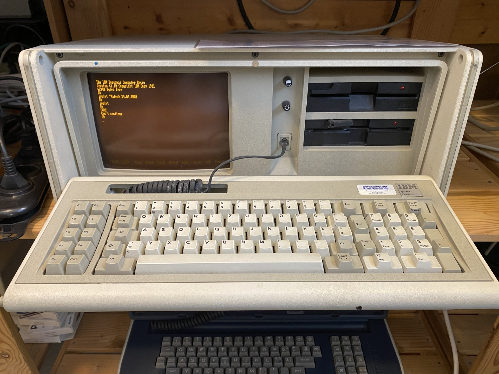
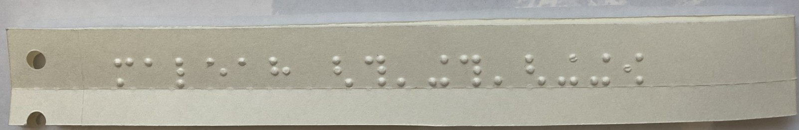

Dieser Personal Computer ist ein IBM Personal Computer vom Modell 5150.
International Business Machines (IBM)
Personal Computer (PC)
Baujahr: 1981
Verkaufsjahr: August 1981
Der IBM Personal Computer XT (1983) lösste den ursprünglichen IBM PC ab, gefolgt von verschiedenen Modellen wie dem IBM Personal Computer AT (1984) und später durch die weit verbreiteten IBM-kompatiblen PCs anderer Hersteller, die auf der x86-Architektur basierten.
Der Computer startete ohne Diskette direkt in IBM Cassette BASIC (Version C1.10). Programme konnten über Kassettenrekorder oder Disketten gespeichert werden.
Um Sachen auszudrucken, kann man in der Kommandozeile «lprint *Text» und dann wird der eingegebene Text auf das Papier gedruckt. Um es dann auszudrucken, muss man «lprint» eingeben und Enter drücken. Der Text wird anschliessend in Blindenschrift gedruckt und mann kann in mit dem Cuter abschneiden.
